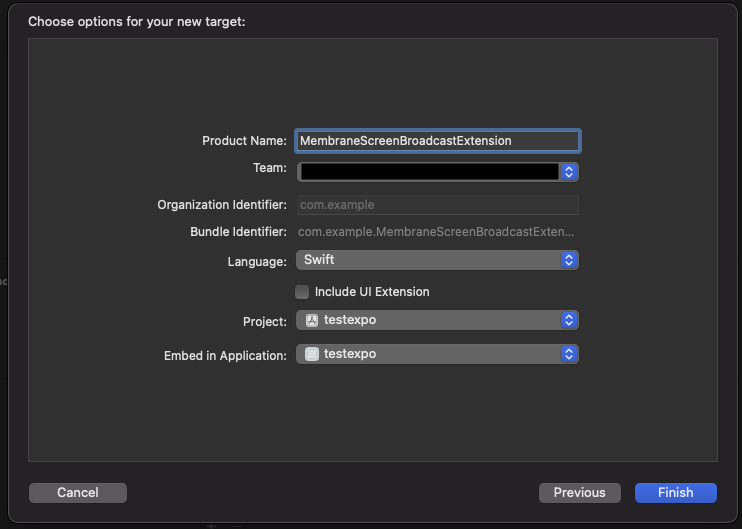
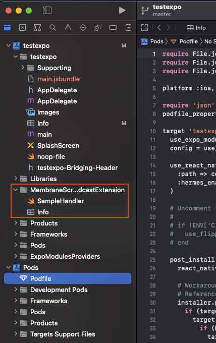

@jellyfish-dev/react-native-client-sdk

react-native-client-sdk
Jellyfish client SDK in React Native
Installation
npm install @jellyfish-dev/react-native-client-sdk
Expo plugin
Even though this is not a native library, it has a dependency on @jellyfish-dev/react-native-membrane-webrtc which requires native configuration.
If you're using development builds with eas build or bare workflow you can try using expo plugin to do the configuration below for you.
Simply run:
expo install @jellyfish-dev/react-native-client-sdk
Add plugin to your app.json:
{
"expo": {
"name": "example",
...
"plugins": [
"@jellyfish-dev/react-native-membrane-webrtc"
]
}
}
On bare workflow run expo prebuild to configure the app, then run pod install.
On development build eas build should take care of it.
Android
- Add camera and microphone permissions to your
AndroidManifest.xml. - Rebuild the app. That's it!
iOS
On iOS installation is a bit more complicated, because you need to setup a screen broadcast app extension for screensharing.
- Add camera and microphone permissions to your main
Info.plist.<key>NSCameraUsageDescription</key>
<string>Allow $(PRODUCT_NAME) to use the camera</string>
<key>NSMicrophoneUsageDescription</key>
<string>Allow $(PRODUCT_NAME) to use the microphone</string> - We recommend adding
audiobackground mode inInfo.plistso that the app doesn't disconnect when it's in background:
<key>UIBackgroundModes</key>
<array>
<string>audio</string>
</array>
Open your
<your-project>.xcworkspacein XcodeCreate new Broadcast Upload Extension. Select File → New → Target... → Broadcast Upload Extension → Next. Choose the name for the new target, select Swift language and deselect "Include UI Extension".

Press Finish. In the next alert xcode will ask you if you want to activate the new scheme - press Cancel.
Configure app group. Go to "Signing & Capabilities" tab, click "+ Capability" button in upper left corner and select "App Groups".

Then in the "App Groups" add a new group or select existing. Usually group name has format
group.<your-bundle-identifier>. Verify that both app and extension targets have app group and dev team set correctly.A new folder with app extension should appear on the left with contents like this:

Replace
SampleHandler.swiftwithMembraneBroadcastSampleHandler.swiftand this code:import Foundation
import MembraneRTC
import os.log
import ReplayKit
import WebRTC
/// App Group used by the extension to exchange buffers with the target application
let appGroup = "{{GROUP_IDENTIFIER}}"
let logger = OSLog(subsystem: "{{BUNDLE_IDENTIFIER}}.MembraneBroadcastSampleHandler", category: "Broadcaster")
/// An example `SampleHandler` utilizing `BroadcastSampleSource` from `MembraneRTC` sending broadcast samples and necessary notification enabling device's screencast.
class MembraneBroadcastSampleHandler: RPBroadcastSampleHandler {
let broadcastSource = BroadcastSampleSource(appGroup: appGroup)
var started: Bool = false
override func broadcastStarted(withSetupInfo _: [String: NSObject]?) {
started = broadcastSource.connect()
guard started else {
os_log("failed to connect with ipc server", log: logger, type: .debug)
super.finishBroadcastWithError(NSError(domain: "", code: 0, userInfo: nil))
return
}
broadcastSource.started()
}
override func broadcastPaused() {
broadcastSource.paused()
}
override func broadcastResumed() {
broadcastSource.resumed()
}
override func broadcastFinished() {
broadcastSource.finished()
}
override func processSampleBuffer(_ sampleBuffer: CMSampleBuffer, with sampleBufferType: RPSampleBufferType) {
guard started else {
return
}
broadcastSource.processFrame(sampleBuffer: sampleBuffer, ofType: sampleBufferType)
}
}Replace
{{GROUP_IDENTIFIER}}and{{BUNDLE_IDENTIFIER}}with your group identifier and bundle identifier respectively.In project's Podfile add the following code:
target 'MembraneScreenBroadcastExtension' do
pod 'MembraneRTC/Broadcast'
endThis new dependency should be added outside of your application target. Example
target 'ReactNativeMembraneExample' do
...
end
target 'MembraneScreenBroadcastExtension' do
pod 'MembraneRTC/Broadcast'
endRun
pod installin yourios/directoryAdd the following constants in your Info.plist:
<key>AppGroupName</key>
<string>{{GROUP_IDENTIFIER}}</string>
<key>ScreencastExtensionBundleId</key>
<string>{{BUNDLE_IDENTIFIER}}.MembraneBroadcastSampleHandler</string>Replace
{{GROUP_IDENTIFIER}}and{{BUNDLE_IDENTIFIER}}with your group identifier and bundle identifier respectively.Rebuild the app and enjoy!
Docs
API documentation is available here
Usage
Make sure you have:
- Running Jellyfish server.
- Created room and token of peer in that room. You can use dashboard example to create room and peer token.
You can refer to our minimal example on how to use this library.
Contributing
See the contributing guide to learn how to contribute to the repository and the development workflow.
Credits
This project has been built and is maintained thanks to the support from Software Mansion.